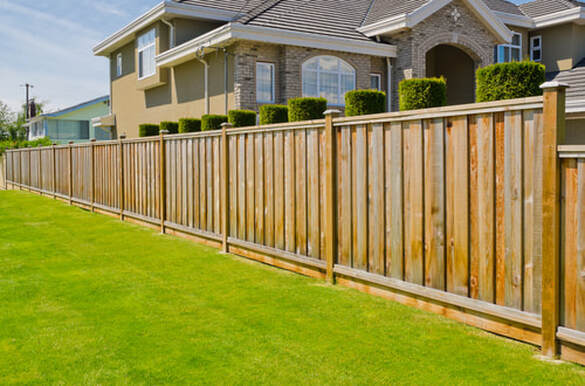
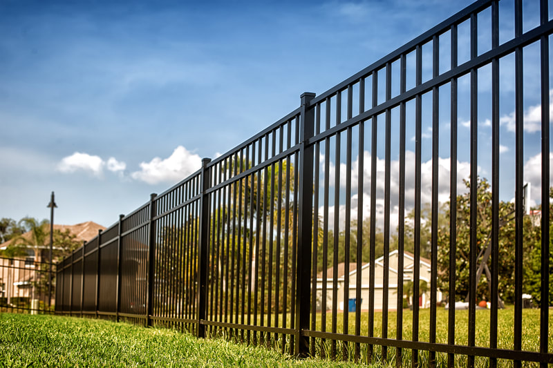
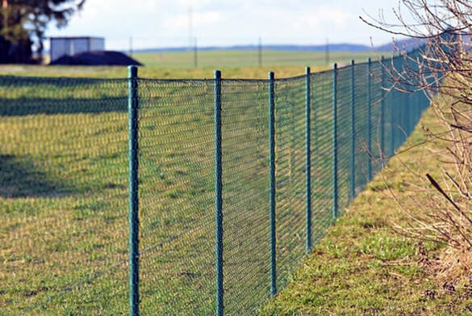
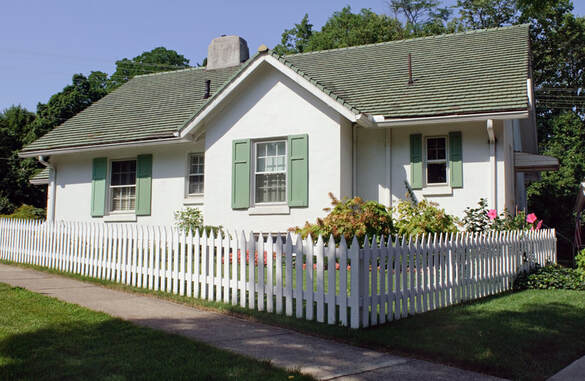
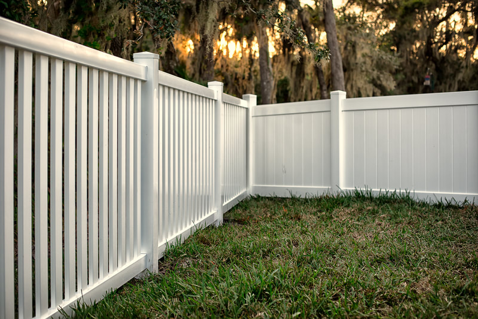
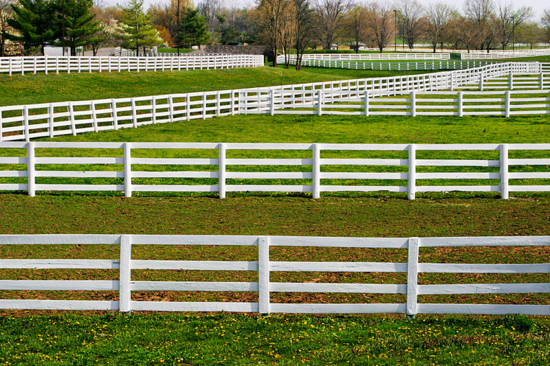
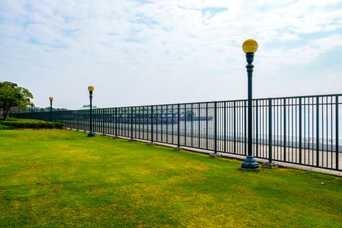

Johnson City, Tennessee
Fence company in Johnson City, TN
Wood, vinyl, aluminum, chain link, and farm fencing for houses, pastures, and commercial lots. New lines, replacements, repairs, and gates are quoted from the property.
- Homes, farms, and work lots
- Posts set for valley clay and ridge rock
- Free on-site estimates
Get a free quote
Tell us the town, the fence type, and roughly how much line you need.
Materials and work
Fence services in Johnson City
Start with the job. A backyard screen, a front-yard picket, a dog run, and a pasture line are not the same fence.

Wood fencing
Privacy and shadowbox wood for a backyard screen you can stain to the house. Posts are set in concrete for clay soil around Johnson City.
View service
Vinyl fencing
Privacy and rail vinyl that stays straight through humid summers and cold winters. A fit when you do not want to stain the fence each year.
View service
Aluminum fencing
Open aluminum picket for front yards, pools, and lines on a slope. It does not rust in East Tennessee humidity and does not need paint.
View service
Chain-link fencing
Galvanized and vinyl-coated chain link for yards, dogs, and work lots. A screen can be added where you need a visual break.
View service
Metal fencing
Ornamental steel for heavier decorative lines and wide drive gates. Stronger than aluminum, and the finish has to be maintained.
View service
Picket fencing
Open picket for front yards and gardens where you want a boundary, not a wall. Heights stay lower so the street view stays clear.
View service
Privacy fencing
Solid wood or vinyl panels that close a backyard off from the next house. Built for side and rear yards, not a corner sight line.
View service
Farm fencing
Rail and woven wire for horses and cattle on longer pasture runs. Built for Washington County acreage, not a backyard panel.
View service
Commercial fencing
Heavier chain link, rail, and vehicle gates for yards and job sites. Specified for a work lot, not a house privacy panel.
View service
Gate installation
Walk gates and drive gates hung on posts sized for the opening. New installs, plus repairs when a gate sags or will not latch.
View service
Fence repair
Boards, posts, and gates replaced where the rest of the line is still sound. If the posts have failed, we say that before we patch them.
View serviceStyles
Fences we install
Privacy, picket, chain link, aluminum, and rail from the crew that walks the line in Johnson City and nearby towns.
Houses
Backyard privacy, pet runs, pool barriers, and property-line replacements. Most in-town jobs are a wood or vinyl screen on the side and rear, with a gate that fits the mower. Corner lots keep the sight triangle low so drivers can see past the fence.
Privacy fencingLots and acreage
A storage yard in Piney Flats needs heavier chain link and a vehicle gate. A pasture in Telford or Limestone needs rail or wire sized for the animals, not a backyard panel. Tell us how the ground is used and we will spec the line for that use.
Farm fencingHow a fence job is quoted
- 1Name the job. Screen, contain animals, mark a line, or secure a lot. That choice picks the material faster than a photo.
- 2Walk the ground. Clay, rock, slope, trees, and the distance from the driveway all change the posts and the labor.
- 3Count the openings. A fence with the wrong gate is a daily problem. Walk gates and drive gates are priced as their own pieces.
- 4Repair or replace. Sound posts can take new boards. Posts that have rotted at the ground line cannot. We say which one you have.
Repairs and gates
Leaning posts, missing boards, and sagging gates show up after a wet winter or a wind event. If the rest of the line is sound, we repair the failed section. If the posts have let go in the clay, we will tell you to rebuild that run.
Gates are hung on posts sized for the opening, with hardware that can carry the weight. A walk gate and a drive gate are different builds.
Fence repairService area
We work in Johnson City and nearby communities, roughly a 25-mile drive. Each place puts a different demand on the fence: tight in-town lots, HOA subdivisions, wet river bottoms, and longer farm lines.
Questions before you call
How much does a fence cost in Johnson City, TN?
The price follows the line we measure: length, height, material, gates, and whether an old fence has to come out. Clay that holds water, a slope, tree roots, and rock on a ridge lot all change the labor. We do not publish a per-foot menu. The estimate comes from the property.
Can you set fence posts in the clay and rock around Johnson City?
Yes. Valley lots in Washington County are often clay that stays wet after rain, and ridge lots toward Unicoi and Buffalo Mountain can hit rock. Posts go in concrete, with the mix crowned so water does not pool at the post. If a hole hits solid rock or a stretch stays saturated, we say so before we set it.
Do you offer wood, vinyl, aluminum, chain link, and farm fencing?
Yes. Wood and vinyl cover privacy and picket work. Aluminum and ornamental metal cover open lines and gates. Chain link covers yards, dogs, and work lots. Farm fencing covers rail and wire for animals on longer runs in places like Telford and Limestone. Repair is part of the same call.
Do I need a permit to put up a fence in Johnson City?
Inside the city, published standards allow a standard residential fence up to 7 feet without a structural permit. Taller than that needs a building permit. On a corner lot, the 25-foot sight triangle stays at 3 feet so drivers can see. A historic overlay can also require design review. Outside the city, confirm the parcel with Washington County or the town that actually governs it. An HOA can be stricter than any of them.
Can you repair a leaning fence, or does the whole line have to come out?
If the posts are still sound, we replace the boards, rails, mesh, or gate that failed and leave the rest. If the posts have rotted at the ground line or heaved out of the clay, new boards on those posts will lean again, and that stretch should be rebuilt. We will tell you which it is after we see the line.
Ready to walk the line?
Call (423) 468-2697 or send the lot details. Estimates are free.